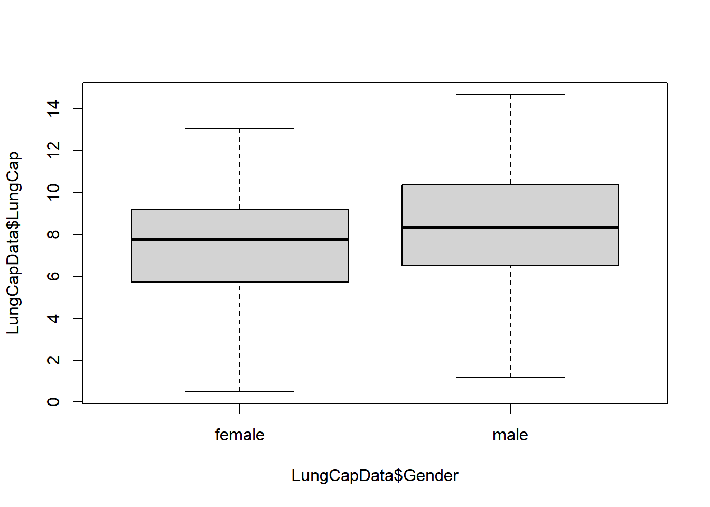

Code
library(tidyverse)
knitr::opts_chunk$set(echo = TRUE)library(tidyverse)
knitr::opts_chunk$set(echo = TRUE)Read in the data from the Excel file:
library(readr)
library(readxl)
LungCapData <- read_excel("_data/LungCapData.xls")
View(LungCapData)The distribution of LungCap looks as follows:
hist(LungCapData$LungCap)
Probability distribution of the LungCap, Males and Females, in a box plot:
boxplot(LungCapData$LungCap ~ LungCapData$Gender)
Lung capacities for smokers and non-smokers, mean and standard deviation:
LungCapData %>%
group_by(Smoke) %>%
summarise(mean = mean(LungCap, na.rm = TRUE), sd = sd(LungCap, na.rm = TRUE))# A tibble: 2 × 3
Smoke mean sd
<chr> <dbl> <dbl>
1 no 7.77 2.73
2 yes 8.65 1.88Results seem to point to smokers having greater lung capacity which is odd and could indicate factors other than age are influencing lung capacity
The relationship between Smoking and Lung Capacity within age groups: “less than or equal to 13”, “14 to 15”, “16 to 17”, and “greater than or equal to 18”:
age 13 and lower:
LungCapData %>%
group_by(Smoke) %>%
dplyr::filter(Age <=13)%>%
summarise(mean = mean(LungCap, na.rm = TRUE),sd = sd(LungCap, na.rm = TRUE))# A tibble: 2 × 3
Smoke mean sd
<chr> <dbl> <dbl>
1 no 6.36 2.21
2 yes 7.20 1.58age 14 to 15:
LungCapData %>%
group_by(Smoke) %>%
dplyr::filter(Age == 14:15)%>%
summarise(mean = mean(LungCap, na.rm = TRUE),sd = sd(LungCap, na.rm = TRUE))Warning in Age == 14:15: longer object length is not a multiple of shorter
object length# A tibble: 2 × 3
Smoke mean sd
<chr> <dbl> <dbl>
1 no 8.84 1.36
2 yes 8.91 0.865age 16 to 17:
LungCapData %>%
group_by(Smoke) %>%
dplyr::filter(Age == 16:17)%>%
summarise(mean = mean(LungCap, na.rm = TRUE),sd = sd(LungCap, na.rm = TRUE))Warning in Age == 16:17: longer object length is not a multiple of shorter
object length# A tibble: 2 × 3
Smoke mean sd
<chr> <dbl> <dbl>
1 no 10.4 1.73
2 yes 9.60 1.41age 18 and over:
LungCapData %>%
group_by(Smoke) %>%
dplyr::filter(Age >=18)%>%
summarise(mean = mean(LungCap, na.rm = TRUE),sd = sd(LungCap, na.rm = TRUE))# A tibble: 2 × 3
Smoke mean sd
<chr> <dbl> <dbl>
1 no 11.1 1.56
2 yes 10.5 1.25When looking at mean lung capacity of smokers versus non-smokers by age groups we can see lung capacity increasing consistently as age increases. For the two lowest age groups mean capacity is lower for non-smokers although the difference decreases as age increases; this trend is reversed from age 16 onwards as non-smokers overtake smokers in lung capacity. Across all age groups non-smokers also have a greater standard deviation in lung capacity compared to smokers with the age 13 and under non-smoker group having the greatest standard deviation. It is likely that the greater number of age 13 and under respondents is the reason why overall results mirror the distribution seen in the youngest age group.
Covariance between lung capacity and age:
cov(LungCapData$Age,LungCapData$LungCap)[1] 8.738289A positive covariance is shown which lets us know that as age increases lung capacity also increases.
Correlation between lung capacity and age:
cor(LungCapData$Age,LungCapData$LungCap)[1] 0.8196749The correlation coefficient is also positive; similar to the covariance this lets us know that there is a positive relationship between age and lung capacity. Additionally, since .819 is a relatively high score, as a score of 1 would indicate a perfect positive relationship, we know there is a strong relationship where a older respondent would be highly likely to have higher lung capacity and a younger respondent would likely have lower lung capacity.
The probability that a randomly selected inmate has exactly 2 prior convictions:
Create data frame:
convictions<- c(0,1,2,3,4)
prisoners<- c(128, 434, 160, 64, 24)
df <- data.frame(convictions, prisoners)
tibble(df)# A tibble: 5 × 2
convictions prisoners
<dbl> <dbl>
1 0 128
2 1 434
3 2 160
4 3 64
5 4 24Probability of exactly 2 prior convictions:
160/sum(prisoners)[1] 0.1975309Probability of fewer than 2 prior convictions (total # of prisoners with less than 2 prior convictions = 562):
562/sum(prisoners)[1] 0.6938272Probability of 2 or fewer prior convictions (total # of prisoners with 2 or fewer prior convictions = 722):
722/sum(prisoners)[1] 0.891358Probability of more than 2 prior convictions (total # of prisoners with more than 2 prior convictions = 88):
88/sum(prisoners)[1] 0.108642The expected value for the number of prior convictions (using the probability of observing each prisoner prior conviction group):
con1<- c(0,1,2,3,4)
pprob<- c(.158,.536,.198,.079,.028)
sum(con1*pprob)[1] 1.281Variance and standard deviation for prior convictions:
var(prisoners)[1] 25948sd(prisoners)[1] 161.0838